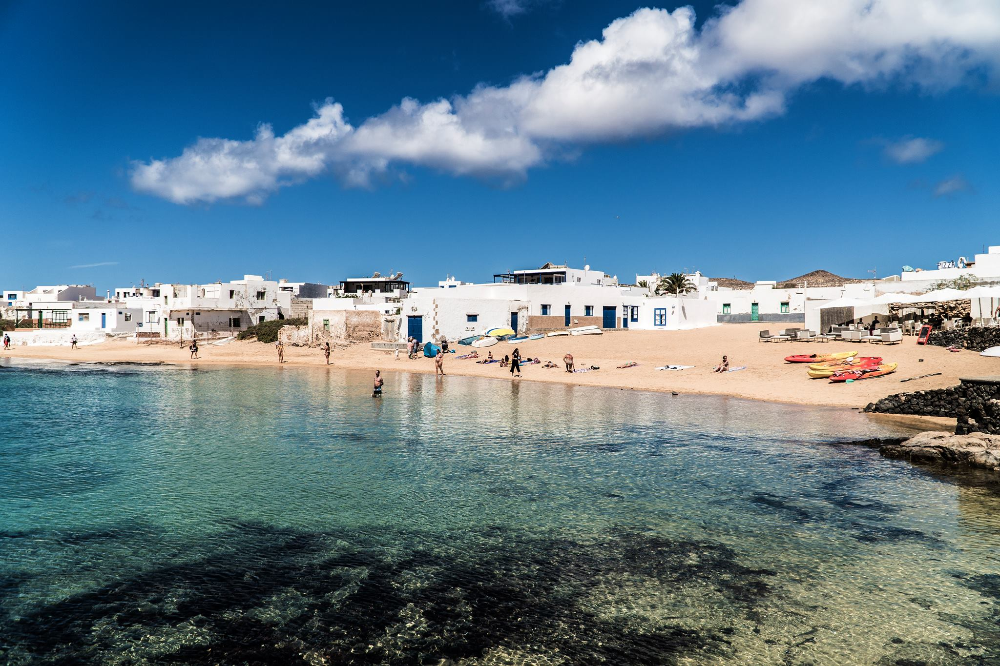

La Graciosa es una pequeña isla de Canarias que se encuentra al norte de Lanzarote. Es conocida por sus playas de arena, sus paisajes naturales y su tranquilidad.
Me gusta La Graciosa porque es un lugar bonito donde puedo disfrutar del mar, pasear y pasar tiempo con mi familia o mis amigos.

Puedes visitar la web oficial de turismo de Lanzarote: Turismo de Lanzarote
```